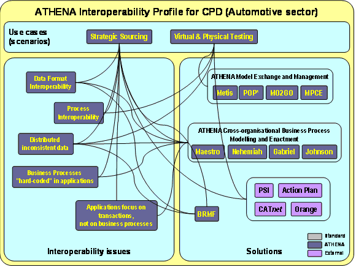

")

Collaborative product development (CPD) profile
Collaborative product development (CPD) pilot
The Collaborative Product Development is founded mainly on four processes that have been employed separately as use cases for the research and pilot for the assessment of the Athena results. The core process in CPD is the Target Setting, an OEM-internal technical and decisional process that guides all the relationships with the other processes. In chronological order, the pilots that have been developed and executed involve the following sub-processes:
- Target Setting and Virtual & Physical Testing
- Target Setting, Design and Strategic Sourcing
- CPD (overall)

Virtual and physical testing
The first portion of the Collaborative Product Development that has been analysed and in which a test case for piloting has been identified, is Virtual & Physical Testing, the process with which the OEM tests the prototypes of the car systems and supplier components. The results of these testing activities feed the refinement of the vehicle objectives in the Target setting process as well as in the design operations.
Business processes as well as rough data are exchanged between the OEM and the Test Supplier applications. The ATHENA solutions employed in this pilot are:
- POP* – Enterprise model exchange specifications
- Metis – Enterprise Model Authoring Tool and its extension for POP* format
- Mo2Go – Enterprise Model Authoring Tool and its extension for POP* format
- Grai – Enterprise Model Authoring Tool and its extension for POP* format
- MPCE – Modelling Platform for Collaborative Enterprises
In addition it has been necessary to integrate these solutions in the OEM environment, in particular with the legacy applications:
- PSI (Piano Sperimentale Integrato) – an application for supporting product performances and test management
- CATnet (Computer Aided Testing on the network) – a Web-based application for test management
Strategic sourcing
The second portion of the Collaborative Product Development considered has been the Strategic Sourcing, i.e. the process selecting the suppliers that will participate in the development and the production of the car.
The Sourcing process under examination is not only a mere supplier choice process, but it is strongly concerned with defining product specifications and product innovation. In fact, this strategic sourcing gravitates around the exchange of a particular document (Request for Quotation) that contains a product description and that is completed and improved during the process by means of the negotiation between the OEM and the first tier suppliers and also between the first and the second tier suppliers. But if we compare the collaboration between the OEM and the first tier supplier with the collaboration between the first tier supplier and the second tier suppliers we notice significant differences in the interoperability requirements. On the OEM side we find a process-driven environment, where the number of participating first tier suppliers is low, and the first tier suppliers rarely change. On the first tier supplier side, we find a number of second tier suppliers. Second and lower tier suppliers join and leave the environment very dynamically. The business processes must continuously adapt to these events, which results in an event driven collaboration paradigm, as opposed to the process driven paradigm on the OEM side. The pilot development has been realised by the collaboration between CR-FIAT and Siemens, acting as OEM and first tier supplier, also outside the ATHENA consortium. The ATHENA solutions used in this first piloting are:
- Mo2Go – Enterprise modelling tool and its extension format for Maestro
- CBP construct – collaborative business process definition
- MAESTRO – Enterprise modelling tool for collaborative business process
- Nehemiah – Process engine and simulator
- Gabriel – Task management tool
- Johnson – SOAP client/server
- BRMF – Business Resources Management Framework, a event and document-driven P2P platform
Besides these solutions, other applications are used in the pilot:
- PSI (Piano Sperimentale Integrato) – for product performances and test management
- ActionPlan – Suppliers data Repository (used by FIAT Purchasing department)